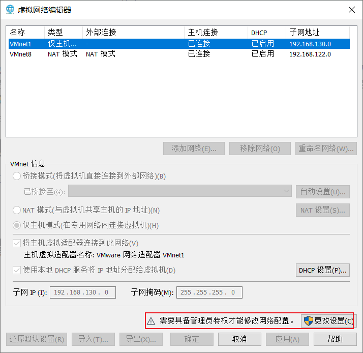
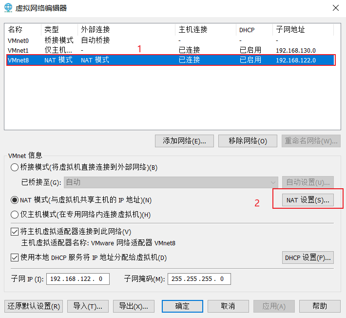
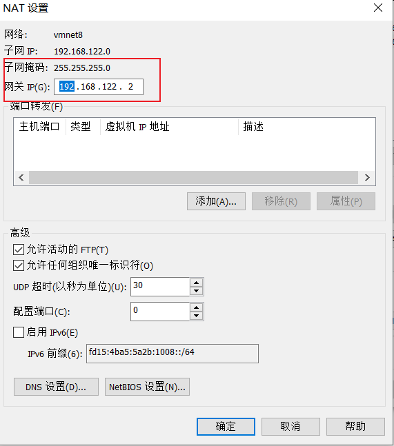
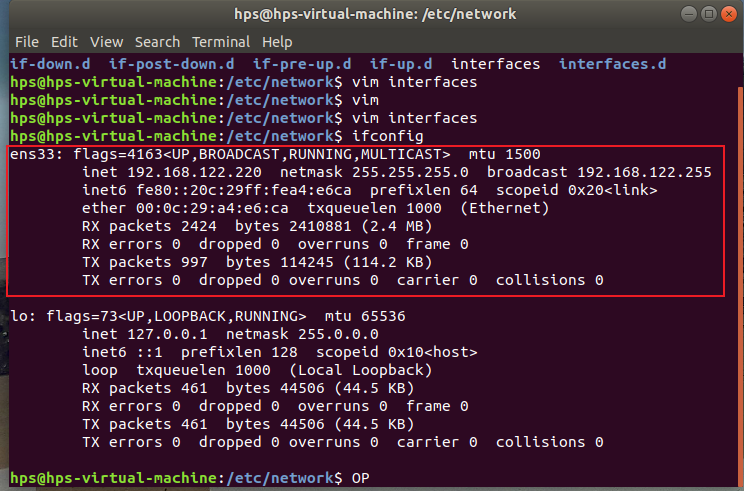
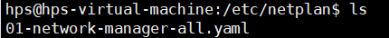

为虚拟机下的ubuntu-1804配置静态ip
本文将提供两种方法(netplan、interfaces)为虚拟机下的Ubuntu-1804系统配置静态ip地址…
一、前言
因为作者在本地搭建了一个虚拟机，并安装了Ubuntu-1804用于一些日常分析Linux下的程序。因为这个缘故，常常需要使用在主机下使用vscode远程连接虚拟机。但是虚拟机的ip地址如果不是静态的，时不时它会自动分配一个新的ip地址，这时就得重新配置主机下一些远程连接的配置文件，次数多了就感觉麻烦了。
使用的虚拟机平台: VMware® Workstation 16 Pro
二、获取基本参数
打开VMware上栏 编辑->虚拟网络编辑器 选项，打开后如图1所示（如果是和我一样灰色的，点击《更改设置》获取权限即可。）。

当页面不再是灰色之后，如图2所示，依次按步骤操作。

最终打开的界面如图3所示，可获得子网掩码，网关ip（这两者在读者和作者的电脑上不是都一样的，记下来即可）。

三、配置静态ip
3.1 查看网卡
执行下面的命令
1 | |
界面信息如图4所示

可知网卡的设备名此处为 ens33，待会配置的时候也是按照这个来进行配置。
3.2 方法1: 使用netplan配置静态ip
1. 进入/etc/netplan目录
1 | |
界面如图5所示(像作者的界面展示的yaml文件名则为01-network-manager-all.yaml ，你的可能是xxxxx.yaml格式的)。

2.编辑配置文件
执行如下命令
1 | |
打开内容
1 | |
3. 配置生效
执行如下命令，可使配置生效。
1 | |
4.查看ip是否更新以及访问外网测试
1 | |
如果展示类似如下信息，则说明网络能够正常访问（第一次设置，可能第一次ping不通，可以试试晚点再ping）,即静态ip已经成功配置。
64 bytes from 103.235.46.39 (103.235.46.39): icmp_seq=1 ttl=128 time=57.0 ms
64 bytes from 103.235.46.39 (103.235.46.39): icmp_seq=2 ttl=128 time=84.6 ms
64 bytes from 103.235.46.39 (103.235.46.39): icmp_seq=3 ttl=128 time=57.3 ms
64 bytes from 103.235.46.39 (103.235.46.39): icmp_seq=4 ttl=128 time=55.9 ms
64 bytes from 103.235.46.39 (103.235.46.39): icmp_seq=5 ttl=128 time=56.2 ms
64 bytes from 103.235.46.39 (103.235.46.39): icmp_seq=6 ttl=128 time=55.7 ms…
3.2 方法2: 使用interfaces配置静态ip
该方法不推荐，特别是还得再去修改其他文件去配置dns服务器ip地址（尽管其他博文有说可以在interfaces文件进行配置，但是我并没有配置生效过，在此就不举例了）
1.打开配置文件 /etc/network/interfaces,新增如下内容
1 | |
执行下面命令，重启网卡
1 | |
查看一下ip是否更新
1 | |
如果没有更新的话，只能重启虚拟机了。
2.打开配置文件 /etc/systemd/resolved.conf，新增dns解析服务器ip地址
1 | |
执行下面命令，重启服务
1 | |
这时再ping一下www.baidu.com应该是没有什么问题了。